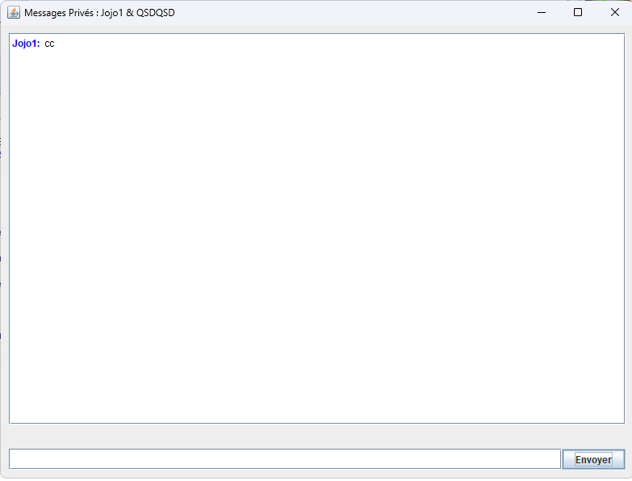

Aperçu du Projet
MateZone est une application de chat collaborative développée en Java Swing permettant la communication en temps réel entre utilisateurs. Le projet implémente une architecture client-serveur avec déploiement Docker pour une solution de messagerie complète.
Fonctionnalités Principales
🔐 Système d'Authentification
- Connexion utilisateur avec pseudo/mot de passe
- Création de nouveaux comptes
- Gestion des sessions utilisateur
- Interface de connexion intuitive
💬 Chat Global
- Messagerie publique en temps réel
- Affichage des messages avec couleurs par utilisateur
- Rafraîchissement automatique des messages
- Synchronisation avec le serveur
📨 Messages Privés
- Conversations privées entre utilisateurs
- Fenêtres dédiées pour chaque conversation
- Historique des messages
- Nom de fichier généré automatiquement
👥 Gestion des Utilisateurs
- Liste des utilisateurs connectés
- Rafraîchissement automatique de la liste
- Sélection d'utilisateur pour messages privés
- Interface utilisateur dynamique
🖼️ Partage d'Images
- Sélection et téléchargement d'images
- Copie automatique dans le dossier utilisateur
- Affichage des images sélectionnées
- Gestion des extensions de fichiers
🐳 Architecture Docker
- Containerisation complète de l'application
- Serveur Apache + PHP + Java
- Scripts de déploiement automatisés
- Configuration multi-ports (80, 8080)
Démonstration Visuelle

🏠 Interface Principale
Vue principale de l'application MateZone montrant :
- Liste des utilisateurs connectés (Admin, User, SZEDFOGH, etc.)
- Zone de chat global avec messages colorés par utilisateur
- Fonctionnalité de photo de profil personnelle
- Interface utilisateur Java Swing moderne et intuitive

💬 Messages Privés
Fenêtre dédiée aux conversations privées démontrant :
- Interface de chat privé entre utilisateurs (Jojo1 & QSDQSD)
- Historique des messages persistant
- Zone de saisie et bouton d'envoi
- Gestion des fenêtres multiples pour chaque conversation
Technologies et Architecture
🐳 Architecture Docker
🐳
Container: docker-grp12-sae203
🌐
Apache Server
🐘
PHP Backend
☕
Java Client
🛠️ Stack Technique
Frontend Client
Java 17
Swing GUI
AWT Events
Multi-threading
Backend Serveur
Apache 2
PHP 8
HTTP/REST
File System
DevOps
Docker
Debian
Bash Scripts
GitHub
Compétences développées
C1 - Développement d'application
Conception et développement d'une application complète avec interface graphique
- Programmation orientée objet en Java
- Interface graphique avec Swing
- Architecture MVC (Modèle-Vue-Contrôleur)
- Gestion des événements utilisateur
C2 - Optimisation d'applications
Analyse et optimisation de l'architecture logicielle
- Découpage en modules client/serveur
- Séparation des méthodes en sous-méthodes
- Structures de données optimisées (fichiers texte)
- Architecture modulaire et évolutive
C3 - Administration systèmes
Déploiement et administration d'une solution serveur
- Containerisation avec Docker
- Configuration de services
- Déploiement automatisé
- Architecture client-serveur
C4 - Gestion des données
Gestion et persistance des données applicatives
- Stockage en fichiers texte avec PHP
- Gestion des utilisateurs et messages
- Mise à jour cohérente des données
- Modèles de données structurés
C6 - Travail en équipe
Collaboration efficace sur un projet technique complexe
- Développement collaboratif
- Versioning avec Git
- Communication technique
- Répartition des tâches
Apprentissages et Défis
🔧 Défis Techniques
- Synchronisation temps réel : Mise en place du rafraîchissement automatique des messages
- Gestion des threads : Interface responsive sans blocage de l'UI
- Communication HTTP : Implémentation des requêtes client-serveur
- Dockerisation : Configuration multi-services dans un conteneur
📚 Apprentissages Clés
- Architecture client-serveur : Compréhension des protocoles de communication
- Swing avancé : Maîtrise des composants graphiques complexes
- Gestion de fichiers : Persistance et synchronisation des données
- DevOps : Containerisation et automatisation du déploiement
🎯 Résultats Obtenus
- Application fonctionnelle avec interface utilisateur moderne
- Communication temps réel stable et fiable
- Déploiement automatisé avec Docker
- Code source documenté et maintenable